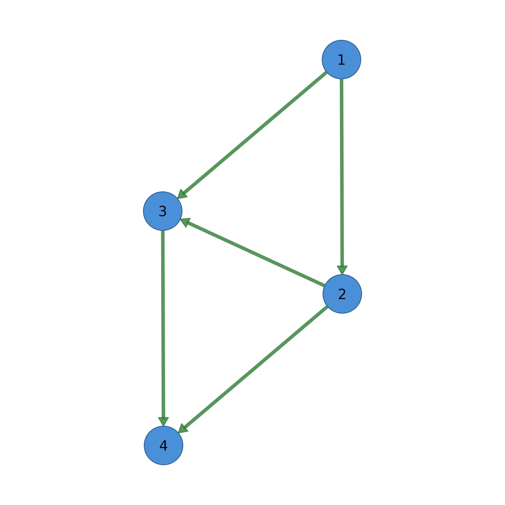
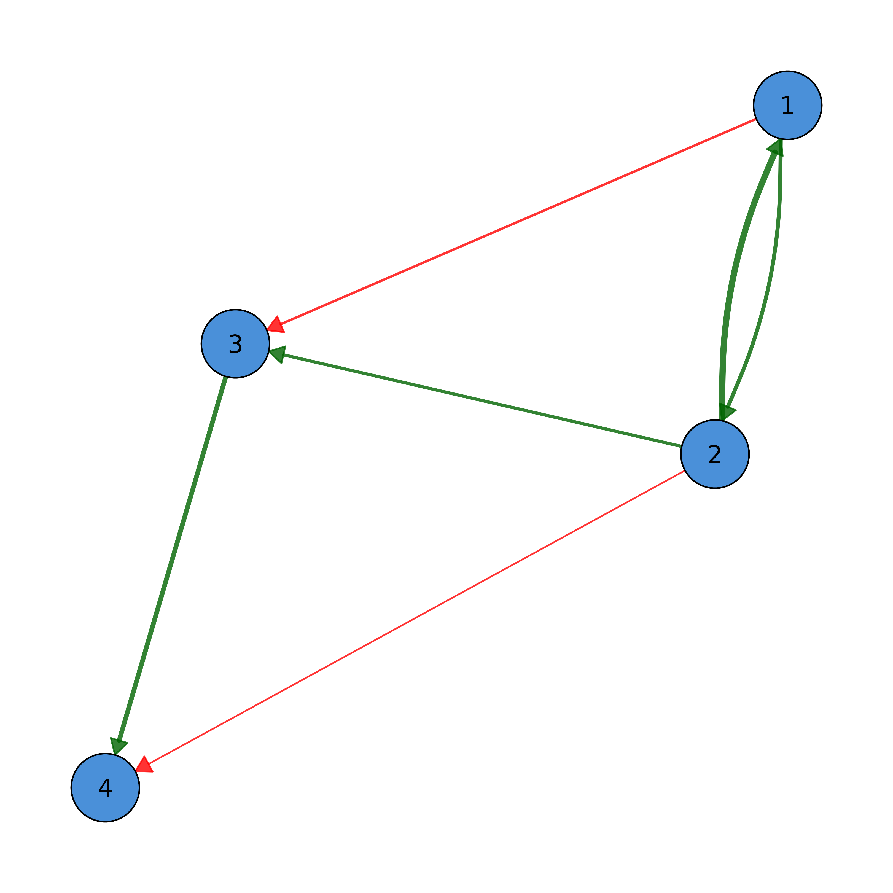
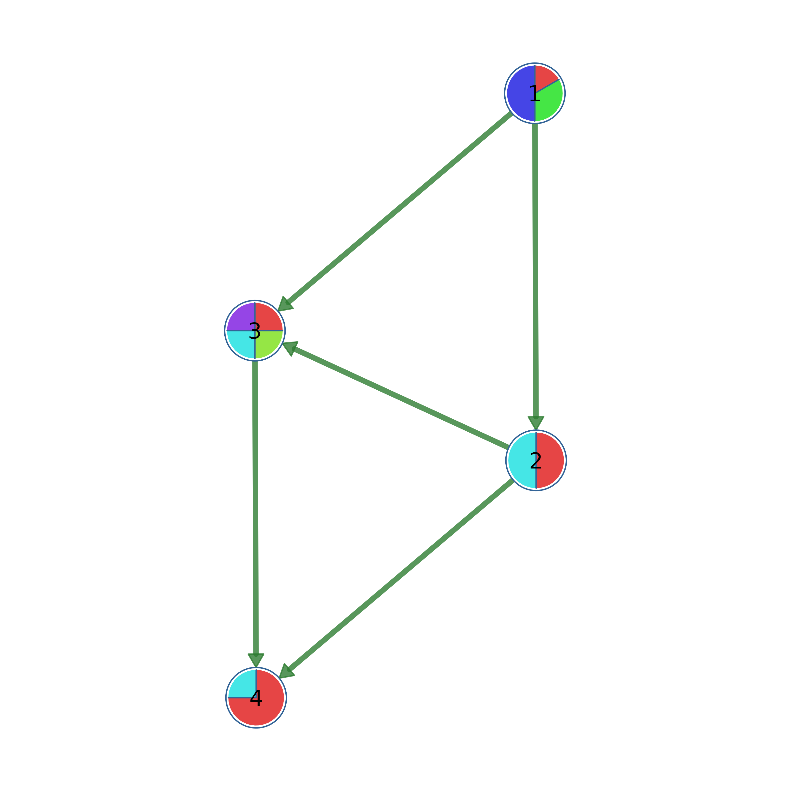
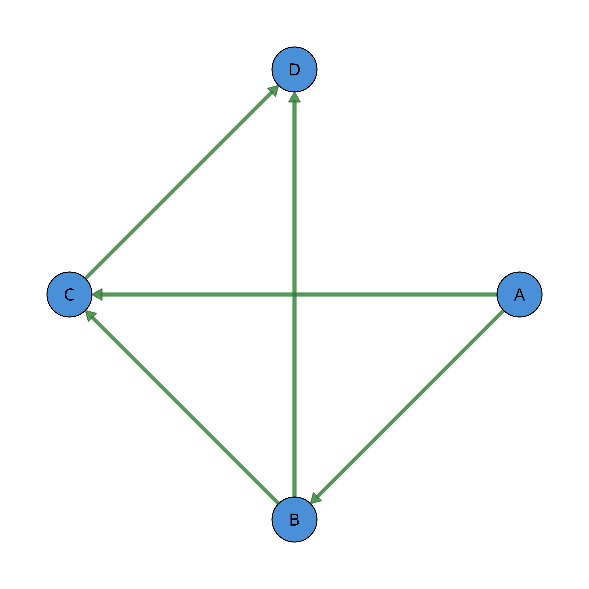

Network visualization using base R graphics (similar to qgraph).
Creates a network visualization using base R graphics functions (polygon, lines, xspline, etc.) instead of grid graphics. This provides better performance for large networks and uses the same snake_case parameter names as soplot() for consistency.
Usage
splot(
x,
layout = "oval",
directed = NULL,
seed = 42,
theme = NULL,
node_size = NULL,
node_size2 = NULL,
node_shape = "circle",
node_svg = NULL,
svg_preserve_aspect = TRUE,
node_fill = NULL,
node_border_color = NULL,
node_border_width = 1,
node_alpha = 1,
labels = TRUE,
label_size = NULL,
label_color = "black",
label_position = "center",
label_fontface = "plain",
label_fontfamily = "sans",
label_hjust = 0.5,
label_vjust = 0.5,
label_angle = 0,
pie_values = NULL,
pie_colors = NULL,
pie_border_width = NULL,
donut_fill = NULL,
donut_values = NULL,
donut_color = NULL,
donut_colors = NULL,
donut_border_color = NULL,
donut_border_width = NULL,
donut_outer_border_color = NULL,
donut_line_type = "solid",
donut_border_lty = NULL,
donut_inner_ratio = 0.8,
donut_bg_color = "gray90",
donut_shape = "circle",
donut_show_value = FALSE,
donut_value_size = 0.8,
donut_value_color = "black",
donut_value_fontface = "bold",
donut_value_fontfamily = "sans",
donut_value_digits = 2,
donut_value_prefix = "",
donut_value_suffix = "",
donut_empty = TRUE,
donut2_values = NULL,
donut2_colors = NULL,
donut2_inner_ratio = 0.4,
edge_color = NULL,
edge_width = NULL,
edge_size = NULL,
esize = NULL,
edge_width_range = c(0.1, 4),
edge_scale_mode = "linear",
edge_cutoff = NULL,
cut = NULL,
edge_alpha = 0.8,
edge_labels = FALSE,
edge_label_size = 0.8,
edge_label_color = "gray30",
edge_label_bg = "white",
edge_label_position = 0.5,
edge_label_offset = 0,
edge_label_fontface = "plain",
edge_label_shadow = FALSE,
edge_label_shadow_color = "gray40",
edge_label_shadow_offset = 0.5,
edge_label_shadow_alpha = 0.5,
edge_style = 1,
curvature = 0,
curve_scale = TRUE,
curve_shape = 0,
curve_pivot = 0.5,
curves = TRUE,
arrow_size = 1,
arrow_angle = pi/6,
show_arrows = TRUE,
bidirectional = FALSE,
loop_rotation = NULL,
edge_start_style = "solid",
edge_start_length = 0.15,
edge_start_dot_density = "12",
edge_ci = NULL,
edge_ci_scale = 2,
edge_ci_alpha = 0.15,
edge_ci_color = NA,
edge_ci_style = 2,
edge_ci_arrows = FALSE,
edge_label_style = "none",
edge_label_template = NULL,
edge_label_digits = 2,
edge_label_oneline = TRUE,
edge_label_ci_format = "bracket",
edge_ci_lower = NULL,
edge_ci_upper = NULL,
edge_label_p = NULL,
edge_label_p_digits = 3,
edge_label_p_prefix = "p=",
edge_label_stars = NULL,
weight_digits = 2,
threshold = 0,
minimum = 0,
maximum = NULL,
edge_positive_color = "#2E7D32",
positive_color = NULL,
edge_negative_color = "#C62828",
negative_color = NULL,
edge_duplicates = NULL,
title = NULL,
title_size = 1.2,
margins = c(0.1, 0.1, 0.1, 0.1),
background = "white",
rescale = TRUE,
layout_scale = 1,
layout_margin = 0.15,
aspect = TRUE,
use_pch = FALSE,
usePCH = NULL,
scaling = "default",
legend = FALSE,
legend_position = "topright",
legend_size = 0.8,
legend_edge_colors = TRUE,
legend_node_sizes = FALSE,
groups = NULL,
node_names = NULL,
filetype = "default",
filename = file.path(tempdir(), "splot"),
width = 7,
height = 7,
res = 600,
...
)Arguments
- x
Network input. Can be:
A square numeric matrix (adjacency/weight matrix)
A data frame with edge list (from, to, optional weight columns)
An igraph object
A cograph_network object
- layout
Layout algorithm: "circle", "spring", "groups", or a matrix of x,y coordinates, or an igraph layout function. Also supports igraph two-letter codes: "kk", "fr", "drl", "mds", "ni", etc. Default is "oval"
- directed
Logical. Force directed interpretation. NULL for auto-detect.
- seed
Random seed for deterministic layouts. Default 42.
- theme
Theme name: "classic", "dark", "minimal", "colorblind", etc.
- node_size
Node size(s). Single value or vector. Default 3.
- node_size2
Secondary node size for ellipse/rectangle height.
- node_shape
Node shape(s): "circle", "square", "triangle", "diamond", "pentagon", "hexagon", "star", "heart", "ellipse", "cross", or any custom SVG shape registered with register_svg_shape().
- node_svg
Custom SVG for nodes: path to SVG file OR inline SVG string.
- svg_preserve_aspect
Logical: maintain SVG aspect ratio? Default TRUE.
- node_fill
Node fill color(s).
- node_border_color
Node border color(s).
- node_border_width
Node border width(s).
- node_alpha
Node transparency (0-1). Default 1.
- labels
Node labels: TRUE (use node names/indices), FALSE (none), or character vector.
- label_size
Label character expansion factor.
- label_color
Label text color.
- label_position
Label position: "center", "above", "below", "left", "right".
- label_fontface
Font face for labels: "plain", "bold", "italic", "bold.italic". Default "plain".
- label_fontfamily
Font family for labels: "sans", "serif", "mono". Default "sans".
- label_hjust
Horizontal justification (0=left, 0.5=center, 1=right). Default 0.5.
- label_vjust
Vertical justification (0=bottom, 0.5=center, 1=top). Default 0.5.
- label_angle
Text rotation angle in degrees. Default 0.
- pie_values
List of numeric vectors for pie chart nodes. Each element corresponds to a node and contains values for pie segments. If a simple numeric vector with values between 0 and 1 is provided (e.g., centrality scores), it is automatically converted to donut_fill for convenience.
- pie_colors
List of color vectors for pie segments.
- pie_border_width
Border width for pie slice dividers. NULL uses node_border_width.
- donut_fill
Numeric value (0-1) for donut fill proportion. This is the qgraph-style API: 0.1 = 10% filled, 0.5 = 50% filled, 1.0 = fully filled. Can be a single value (all nodes) or vector (per-node values).
- donut_values
Deprecated. Use donut_fill for simple fill proportion.
- donut_color
Fill color(s) for the donut ring. Single color sets fill for all nodes. Two colors set fill and background for all nodes. More than 2 colors set per-node fill colors (recycled to n_nodes). Default: "maroon" fill, "gray90" background when node_shape="donut".
- donut_colors
Deprecated. Use donut_color instead.
- donut_border_color
Border color for donut rings. NULL uses node_border_color.
- donut_border_width
Border width for donut rings. NULL uses node_border_width.
- donut_outer_border_color
Color for outer boundary border (enables double border). NULL (default) shows single border. Set to a color for double border effect. Can be scalar or per-node vector.
- donut_line_type
Line type for donut borders: "solid", "dashed", "dotted", or numeric (1=solid, 2=dashed, 3=dotted). Can be scalar or per-node vector.
- donut_border_lty
Deprecated. Use
donut_line_typeinstead.- donut_inner_ratio
Inner radius ratio for donut (0-1). Default 0.5.
- donut_bg_color
Background color for unfilled donut portion.
- donut_shape
Base shape for donut: "circle", "square", "hexagon", "triangle", "diamond", "pentagon". Can be a single value or per-node vector. Default inherits from node_shape (e.g., hexagon nodes get hexagon donuts). Set explicitly to override (e.g., donut_shape = "hexagon" for hexagon donuts on all nodes regardless of node_shape).
- donut_show_value
Logical: show value in donut center? Default FALSE.
- donut_value_size
Font size for donut center value.
- donut_value_color
Color for donut center value.
- donut_value_fontface
Font face for donut center value: "plain", "bold", "italic", "bold.italic". Default "bold".
- donut_value_fontfamily
Font family for donut center value: "sans", "serif", "mono". Default "sans".
- donut_value_digits
Decimal places for donut center value. Default 2.
- donut_value_prefix
Text before donut center value (e.g., "$"). Default "".
- donut_value_suffix
Text after donut center value (e.g., "%"). Default "".
- donut_empty
Logical: render empty donut rings for NA values? Default TRUE.
- donut2_values
List of values for inner donut ring (for double donut).
- donut2_colors
List of color vectors for inner donut ring segments.
- donut2_inner_ratio
Inner radius ratio for inner donut ring. Default 0.4.
- edge_color
Edge color(s). If NULL, uses edge_positive_color/edge_negative_color based on weight.
- edge_width
Edge width(s). If NULL, scales by weight using edge_size and edge_width_range.
- edge_size
Base edge size for weight scaling. NULL (default) uses adaptive sizing based on network size:
15 * exp(-n_nodes/90) + 1. For directed networks, this is halved. Larger values = thicker edges overall.- esize
Deprecated. Use
edge_sizeinstead.- edge_width_range
Output width range as c(min, max) for weight-based scaling. Default c(0.5, 4). Edges are scaled to fit within this range.
- edge_scale_mode
Scaling mode for edge weights: "linear" (default, qgraph-style), "log" (logarithmic for wide weight ranges), "sqrt" (moderate compression), or "rank" (equal visual spacing regardless of weight distribution).
- edge_cutoff
Two-tier cutoff for edge width scaling. NULL (default) = auto-calculate as 75th percentile of weights (qgraph behavior). 0 = disabled (continuous scaling). Positive number = manual threshold. Edges below cutoff get minimal width variation.
- cut
Deprecated. Use
edge_cutoffinstead.- edge_alpha
Edge transparency (0-1). Default 0.8.
- edge_labels
Edge labels: TRUE (show weights), FALSE (none), or character vector.
- edge_label_size
Edge label size.
- edge_label_color
Edge label text color.
- edge_label_bg
Edge label background color.
- edge_label_position
Position along edge (0-1).
- edge_label_offset
Perpendicular offset for edge labels (0 = on line, positive = above).
- edge_label_fontface
Font face: "plain", "bold", "italic", "bold.italic".
- edge_label_shadow
Logical: enable drop shadow for edge labels? Default FALSE.
- edge_label_shadow_color
Color for edge label shadow. Default "gray40".
- edge_label_shadow_offset
Offset distance for shadow in points. Default 0.5.
- edge_label_shadow_alpha
Transparency for shadow (0-1). Default 0.5.
- edge_style
Line type(s): 1=solid, 2=dashed, 3=dotted, etc.
- curvature
Edge curvature. 0 for straight, positive/negative for curves.
- curve_scale
Logical: auto-curve reciprocal edges?
- curve_shape
Spline tension (-1 to 1). Default 0.
- curve_pivot
Position along edge for curve control point (0-1).
- curves
Curve mode: TRUE (default) = single edges straight, reciprocal edges curve as ellipse (two opposing curves); FALSE = all straight; "force" = all curved.
- arrow_size
Arrow head size.
- arrow_angle
Arrow head angle in radians. Default pi/6 (30 degrees).
- show_arrows
Logical or vector: show arrows on directed edges?
- bidirectional
Logical or vector: show arrows at both ends?
- loop_rotation
Angle(s) in radians for self-loop direction.
- edge_start_style
Style for the start segment of edges: "solid" (default), "dashed", or "dotted". Use dashed/dotted to indicate edge direction (source node).
- edge_start_length
Fraction of edge length for the styled start segment (0-0.5). Default 0.15 (15% of edge). Only applies when edge_start_style is not "solid".
- edge_start_dot_density
Pattern for dotted start segments. A two-character string where the first digit is dot length and second is gap length (in line width units). Default "12" (1 unit dot, 2 units gap). Use "11" for tighter dots, "13" for more spacing. Only applies when edge_start_style = "dotted".
- edge_ci
Numeric vector of CI widths (0-1 scale). Larger values = more uncertainty.
- edge_ci_scale
Width multiplier for underlay thickness. Default 2.
- edge_ci_alpha
Transparency for underlay (0-1). Default 0.15.
- edge_ci_color
Underlay color. NA (default) uses main edge color.
- edge_ci_style
Line type for underlay: 1=solid, 2=dashed, 3=dotted. Default 2.
- edge_ci_arrows
Logical: show arrows on underlay? Default FALSE.
- edge_label_style
Preset style: "none", "estimate", "full", "range", "stars".
- edge_label_template
Template with placeholders: {est}, {range}, {low}, {up}, {p}, {stars}. Overrides edge_label_style if provided.
- edge_label_digits
Decimal places for estimates. Default 2.
- edge_label_oneline
Logical: single line format? Default TRUE.
- edge_label_ci_format
CI format: "bracket" for
[low, up]or "dash" forlow-up.- edge_ci_lower
Numeric vector of lower CI bounds for labels.
- edge_ci_upper
Numeric vector of upper CI bounds for labels.
- edge_label_p
Numeric vector of p-values for edges.
- edge_label_p_digits
Decimal places for p-values. Default 3.
- edge_label_p_prefix
Prefix for p-values. Default "p=".
- edge_label_stars
Stars for labels: character vector, TRUE (compute from p), or numeric (treated as p-values).
- weight_digits
Number of decimal places to round edge weights to before plotting. Edges that round to zero are automatically removed. Default 2. Set NULL to disable rounding.
- threshold
Minimum absolute weight to display.
- minimum
Alias for threshold (qgraph compatibility). Uses max of threshold and minimum.
- maximum
Maximum weight for scaling. NULL for auto.
- edge_positive_color
Color for positive weights.
- positive_color
Deprecated. Use
edge_positive_colorinstead.- edge_negative_color
Color for negative weights.
- negative_color
Deprecated. Use
edge_negative_colorinstead.- edge_duplicates
How to handle duplicate edges in undirected networks. NULL (default) = stop with error listing duplicates. Options: "sum", "mean", "first", "max", "min", or a custom aggregation function.
- title
Plot title.
- title_size
Title font size.
- margins
Margins as c(bottom, left, top, right).
- background
Background color.
- rescale
Logical: rescale layout to -1 to 1 range?
- layout_scale
Scale factor for layout. >1 expands (spreads nodes apart), <1 contracts (brings nodes closer). Use "auto" to automatically scale based on node count (compact for small networks, expanded for large). Default 1.
- layout_margin
Margin around the layout as fraction of range. Default 0.15. Set to 0 for no extra margin (tighter fit). Affects white space around nodes.
- aspect
Logical: maintain aspect ratio?
- use_pch
Logical: use points() for simple circles (faster). Default FALSE.
- usePCH
Deprecated. Use
use_pchinstead.- scaling
Scaling mode: "default" for qgraph-matched scaling where node_size=6 looks similar to qgraph vsize=6, or "legacy" to preserve pre-v2.0 behavior.
- legend
Logical: show legend?
- legend_position
Position: "topright", "topleft", "bottomright", "bottomleft".
- legend_size
Legend text size.
- legend_edge_colors
Logical: show positive/negative edge colors in legend?
- legend_node_sizes
Logical: show node size scale in legend?
- groups
Group assignments for node coloring/legend.
- node_names
Alternative names for legend (separate from labels).
- filetype
Output format: "default" (screen), "png", "pdf", "svg", "jpeg", "tiff".
- filename
Output filename (without extension).
- width
Output width in inches.
- height
Output height in inches.
- res
Resolution in DPI for raster outputs (PNG, JPEG, TIFF). Default 600.
- ...
Additional arguments passed to layout functions.
Details
Edge Curve Behavior
Edge curving is controlled by three parameters that interact:
- curves
Mode for automatic curving.
FALSE= all straight,TRUE(default) = curve only reciprocal edge pairs as an ellipse,"force"= curve all edges inward toward network center.- curvature
Manual curvature amount (0-1 typical). Sets the magnitude of curves. Default 0 uses automatic 0.175 for curved edges. Positive values curve edges; the direction is automatically determined.
- curve_scale
Not currently used; reserved for future scaling.
For reciprocal edges (A->B and B->A both exist), the edges curve
in opposite directions to form a visual ellipse, making bidirectional
relationships clear.
Weight Scaling Modes (edge_scale_mode)
Controls how edge weights are mapped to visual widths:
- linear (default)
Width proportional to weight. Best when weights are similar in magnitude.
- log
Logarithmic scaling. Best when weights span multiple orders of magnitude (e.g., 0.01 to 100).
- sqrt
Square root scaling. Moderate compression, good for moderately skewed distributions.
- rank
Rank-based scaling. Ignores actual values; uses relative ordering. All edges get equal visual spacing regardless of weight distribution.
Donut vs Pie vs Double Donut
Three ways to show additional data on nodes:
- Donut (donut_fill)
Single ring showing a proportion (0-1). Ideal for completion rates, probabilities, or any single metric per node. Use
donut_colorfor fill color anddonut_bg_colorfor unfilled portion.- Pie (pie_values)
Multiple colored segments showing category breakdown. Ideal for composition data. Values are normalized to sum to 1. Use
pie_colorsfor segment colors.- Double Donut (donut2_values)
Two concentric rings for comparing two metrics per node. Outer ring uses
donut_fill/donut_color, inner ring usesdonut2_values/donut2_colors.
CI Underlay System
Confidence interval underlays draw a wider, semi-transparent edge behind the main edge to visualize uncertainty:
- edge_ci
Vector of CI widths (0-1 scale). Larger = more uncertainty.
- edge_ci_scale
Multiplier for underlay width relative to main edge. Default 2 means underlay is twice as wide as main edge at CI=1.
- edge_ci_alpha
Transparency of underlay (0-1). Default 0.15.
- edge_ci_style
Line type: 1=solid, 2=dashed (default), 3=dotted.
Edge Label Templates
For statistical output, use templates to format complex labels:
- edge_label_template
Template string with placeholders:
{est}for estimate/weight,{low}/{up}for CI bounds,{range}for formatted range,{p}for p-value,{stars}for significance stars.- edge_label_style
Preset styles:
"estimate"(weight only),"full"(estimate + CI),"range"(CI only),"stars"(significance).
Examples
# Basic network from adjacency matrix
adj <- matrix(c(0, 1, 1, 0,
0, 0, 1, 1,
0, 0, 0, 1,
0, 0, 0, 0), 4, 4, byrow = TRUE)
splot(adj)

# With curved edges
splot(adj, curvature = 0.2)
# Weighted network with colors
w_adj <- matrix(c(0, 0.5, -0.3, 0,
0.8, 0, 0.4, -0.2,
0, 0, 0, 0.6,
0, 0, 0, 0), 4, 4, byrow = TRUE)
splot(w_adj, edge_positive_color = "darkgreen", edge_negative_color = "red")

# Pie chart nodes
splot(adj, pie_values = list(c(1,2,3), c(2,2), c(1,1,1,1), c(3,1)))

# Circle layout with labels
splot(adj, layout = "circle", labels = c("A", "B", "C", "D"))
